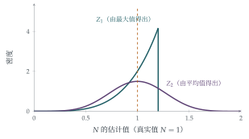

STEP III 1998，第 14 题
继续之前，请先阅读题目（原题为英文）。题目载于 STEP Support Programme 的题目资料库： step.maths.org/questions/98-s3-q14
引子
第二次世界大战期间，盟军情报部门想知道德国每月生产多少辆坦克。间谍的报告显示每月约 \(1400\) 辆。统计学家则另辟蹊径：缴获的坦克在变速箱和其他零件上都刻有序号，而这些序号实际上就是从 \(1, 2, \ldots, N\) 中抽出的一个随机样本（random sample）。单凭这些数字，他们估计产量约为每月 \(250\) 辆。按照一般引用的数字，战后查阅的德国纪录显示为 \(245\) 辆。统计学家的估计远比间谍准确。
本题比较两种利用序号估计 \(N\) 的方法。两者平均而言都是正确的，但其中一种运用数据的效率远高于另一种；弄清楚是哪一种，就会引出估计理论（estimation theory）的核心思想：在平均而言正确的估计量（estimator）当中，应选取波动最小的一个。
动笔之前
设 \(M\) 是 \([0, N]\) 上 \(n\) 个独立均匀分布（uniform distribution）取值中的最大者，那么 \(\mathrm{P}(M \leq m)\) 是多少？
\(M \leq m\) 当且仅当每个 \(X_i \leq m\)，所以当 \(0 \leq m \leq N\) 时，\(\mathrm{P}(M \leq m) = \bigl(\frac mN\bigr)^n\)（可与 第 12.25 节 比较）。求导后可知，\(M\) 的概率密度（density）为 \(\frac{nm^{n-1}}{N^n}\)。
逐步解题
阶段 1 两者皆无偏
对于 \(M\)： \[\mathrm{E}(M) = \int_0^N m\cdot\frac{nm^{n-1}}{N^n}\,\mathrm{d}m = \frac{n}{n + 1}N, \qquad\text{所以}\qquad \mathrm{E}(Z_1) = \frac{n + 1}{n}\cdot\frac{n}{n + 1}N = N.\] 对于平均值：每个 \(X_i\) 的平均值为 \(\frac N2\)，所以 \(\mathrm{E}(Z_2) = \frac2n\cdot n\cdot\frac N2 = N\)。■
两个估计量都是无偏（unbiased）的：平均而言，它们会给出正确的答案。因子 \(\frac{n + 1}{n}\) 用来修正这个事实：观察到的最大序号总是比 \(N\) 略小一点。
阶段 2 两者的方差
求 \(\mathrm{E}(M^2)\)，从而求 \(\mathrm{Var}(M)\)。至于 \(Z_2\)，单一个 \([0, N]\) 上的均匀变量的方差（variance）是多少？
\(\mathrm{E}(M^2) = \int_0^N m^2\cdot\frac{nm^{n-1}}{N^n}\,\mathrm{d}m = \frac{n}{n + 2}N^2\)，所以 \[\begin{aligned} \mathrm{Var}(M) &= \frac{n}{n + 2}N^2 - \frac{n^2}{(n + 1)^2}N^2 = \frac{nN^2}{(n + 1)^2(n + 2)}, \\ \mathrm{Var}(Z_1) &= \frac{(n + 1)^2}{n^2}\mathrm{Var}(M) = \frac{N^2}{n(n + 2)}. \end{aligned}\] \([0, N]\) 上的均匀变量的方差为 \(\frac{N^2}{12}\)，而各个 \(X_i\) 互相独立，所以 \[\mathrm{Var}(Z_2) = \frac{4}{n^2}\cdot n\cdot\frac{N^2}{12} = \frac{N^2}{3n}. \qed\]
阶段 3 哪一个较好？
比较 \(\frac{1}{n(n + 2)}\) 与 \(\frac{1}{3n}\)。当 \(n\) 增大时，两者如何变化？
两者之比为 \(\frac{\mathrm{Var}(Z_1)}{\mathrm{Var}(Z_2)} = \frac{3}{n + 2}\)，当 \(n \geq 2\) 时小于 \(1\)（当 \(n = 1\) 时则相等，此时两个估计量完全相同）。所以 \(Z_1\) 较好，而且 \(n\) 愈大就好得愈多：它的标准差（standard deviation）以 \(\frac1n\) 的速度缩小，而 \(Z_2\) 的标准差只以 \(\frac{1}{\sqrt n}\) 的速度缩小（图 13.3.1）。若有 \(n = 10\) 个序号，\(Z_1\) 的标准差约为 \(N\) 的 \(9\%\)，而 \(Z_2\) 的约为 \(18\%\)。
选用 \(Z_1\) 还有另一个理由：\(Z_2\) 有时会得出荒谬的结果。若序号为 \(10\)、\(20\) 和 \(300\)，则 \(Z_2 = \frac23 \cdot 330 = 220\)，比我们实际见过的一个序号还要小。而 \(Z_1 = \frac43 \cdot 300 = 400\) 永远不会小于最大的观察值。■

回顾
无偏性。每个估计量都经过缩放，使其期望值（expected value）恰好等于 \(N\)。
比较方差。在无偏估计量当中，方差较小的一个较为可靠。
选用信息量最大的统计量。最大值包含了样本中关于 \(N\) 的全部信息；平均值则浪费了其中一大部分。
背后的数学
充分性
为甚么最大值好这么多？一旦知道最大值 \(M\)，其余各值不论 \(N\) 是多少，都只是在 \([0, M]\) 上均匀分布：它们再没有带来关于 \(N\) 的任何信息。最大值是一个充分统计量（sufficient statistic）。C. R. Rao 与 David Blackwell 的一条定理（1945–47）指出，任何无偏估计量，只要换成它在给定充分统计量下的期望值，都可以得到改进，或至少不会变差；在这里，这个做法正好把 \(Z_2\) 变成 \(Z_1\)。Lehmann–Scheffé 定理进一步证明，\(Z_1\) 是方差最小的无偏估计量。还要留意，\(Z_1\) 的方差以 \(\frac{1}{n^2}\) 的速度下降，比大多数估计量的 \(\frac1n\) 更快：这是因为 \(N\) 是分布的端点，数据会挤向这个端点。
离散版本
真实的序号是整数 \(1, 2, \ldots, N\)，并且是以不放回（without replacement）方式抽样的。这时最佳的无偏估计是 \(\hat N = m + \frac mk - 1\)，其中 \(m\) 是 \(k\) 个观察到的序号中的最大者：即最大值加上各观察值之间的平均间距。盟军统计学家运用这类估计，主要根据变速箱和车轮的序号，估计德国的产量约为每月 \(246\) 辆坦克；相比之下，其后在德国纪录中找到的数字是 \(245\) 辆，而情报报告所显示的是 \(1400\) 辆。
此后这个方法曾多次派上用场，例如分析员曾根据最先售出的几件产品的序号，估计某款新消费产品的生产数量。制造商汲取了教训：现在不少制造商都会把序号编码，使人无法把它们当作简单的顺序编号来解读。Richard Ruggles 与 Henry Brodie 于 1947 年在 Journal of the American Statistical Association 上记述了这项战时工作。
思维技巧
估计量是一个随机变量（random variable）。要问它平均而言是否正确（偏差），以及它的波动有多大（方差），然后选取误差较小的一个。
在大学，这会引出有效估计（efficient estimation）的理论：Cramér–Rao 下界（Cramér–Rao bound）指出无偏估计量的方差最小可以小到甚么程度，而充分性则说明如何达到这个下界。
延伸练习
均方误差（mean squared error）。有偏估计量 \(M\) 满足 \(\mathrm{E}(M - N)^2 = \mathrm{Var}(M) + \bigl(\mathrm{E}(M) - N\bigr)^2\)。计算此值，并与 \(\mathrm{Var}(Z_1)\) 比较。求使 \(\mathrm{E}(cM - N)^2\) 取最小值的常数 \(c\)。
最小值也可以。证明 \((n + 1)\min\{X_i\}\) 也是 \(N\) 的无偏估计量，并求它的方差。这个估计量好用吗？
离散公式。对于序号 \(1, \ldots, N\)，以不放回方式抽取 \(k\) 个，其中最大者为 \(m\)。证明 \(\mathrm{P}(\max \leq m) = \binom mk\big/\binom Nk\)，并验证当 \(k = 1\) 时 \(m + \frac mk - 1\) 是无偏的。
坦克。若 \(5\) 辆缴获的坦克的序号为 \(19\)、\(40\)、\(42\)、\(60\)、\(98\)，试估计坦克的生产数量。
延伸阅读
Richard Ruggles & Henry Brodie, “An empirical approach to economic intelligence in World War II”，Journal of the American Statistical Association 42 (1947)。最初的记述。
John Rice, Mathematical Statistics and Data Analysis（Duxbury），论及偏差、方差与充分性。
David Spiegelhalter, The Art of Statistics（Pelican）。